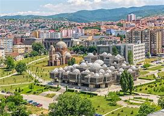
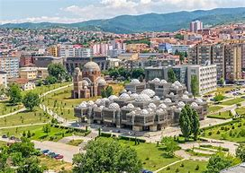

KOSOVO
- Kosovo is located in the central Balkans in Southeastern Europe. It is bordered by Serbia to the north and east, Montenegro to the west, Albania to the southwest, and North Macedonia to the south
- Kosovo has a complex and turbulent history. Historically, it was part of the ancient Dardania region, which was inhabited by Illyrian tribes before being incorporated into the Roman Empire. During the Middle Ages, Kosovo became an important cultural and political center of the medieval Serbian Empire, which is reflected in its many Orthodox churches and monasteries. Under Ottoman rule from the 15th century, Kosovo's population experienced significant changes, including the spread of Islam. The late 20th century brought renewed tension, as Kosovo sought independence from Serbia, leading to a violent conflict in the late 1990s. The Kosovo War ended in 1999 with NATO intervention, and Kosovo eventually declared independence in 2008. While over 100 countries have recognized Kosovo as a sovereign state, some—including Serbia—have not, contributing to ongoing regional tensions.
- The most popular tourist attraction in Kosovo is the Visoki Dečani Monastery, a UNESCO World Heritage site. Built in the 14th century, this Serbian Orthodox monastery is renowned for its stunning medieval architecture and the well-preserved frescoes that adorn its walls, offering a window into Byzantine art and Orthodox religious traditions. Located in the Dečani Valley, the monastery attracts tourists for both its historical and spiritual significance.
- A fun fact about Kosovo is that it has one of the youngest populations in Europe! Nearly half of its citizens are under the age of 25, giving the country a youthful energy that is reflected in its vibrant arts, culture, and music scenes.
Location
History
Tourist Attraction
Fun Fact
 

Kosovos Flavours
Kosovo’s cuisine is a delightful fusion of Balkan, Mediterranean, and Ottoman influences, reflecting the country’s diverse history and cultural heritage. Hearty, comforting, and flavorful, Kosovo’s dishes feature locally sourced ingredients like vegetables, dairy, meat, and grains. Burek, a flaky pastry stuffed with cheese, meat, or spinach, is a popular street food, often enjoyed with yogurt. Another favorite is flija, a layered pastry made with dough and cream, traditionally cooked slowly over an open flame and often served during celebrations.
The Must Try Dish I Discovered in Kosovo
kollpite
Kollpite or kullpite is a traditional Kosovar pastry consisting of flour, warm water, and salt. The dough is rolled out or stretched into very thin dough sheets, which are then stacked on top of each other and drizzled with oil or melted butter in between each layer and on top. Variations of this pastry also use yeast and sugar for the dough, and the pastry is baked until nicely colored and crispy on the outside and soft on the inside. Although it’s commonly filled with crumbled cheese, kollpite is often left plain, with nothing but oil or melted butter in between the layers. This baked pastry is typically enjoyed with a glass of plain yogurt on the side. Some versions of kollpite resemble a snail-shaped pastry roll or burek, and these are usually filled with either sweet or savory fillings such as fried sour cabbage, mashed pumpkin, spinach, cheese and eggs, apples and walnuts, or minced meat and onions.